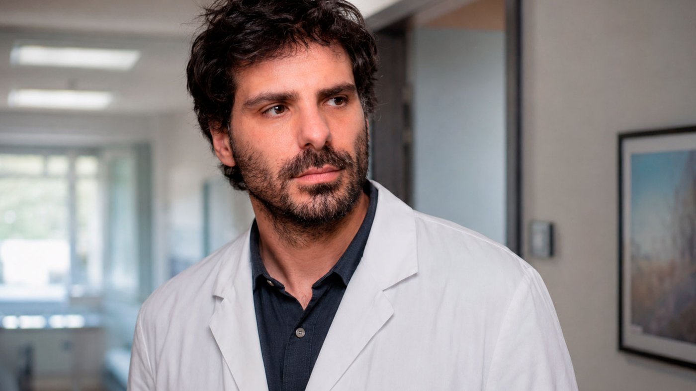
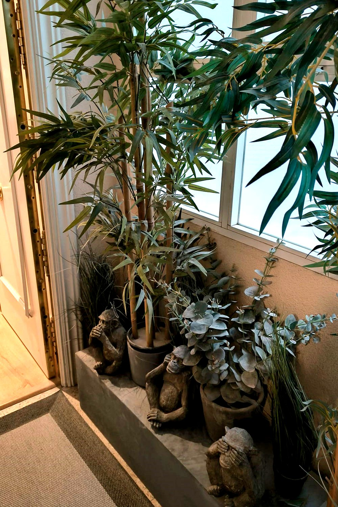
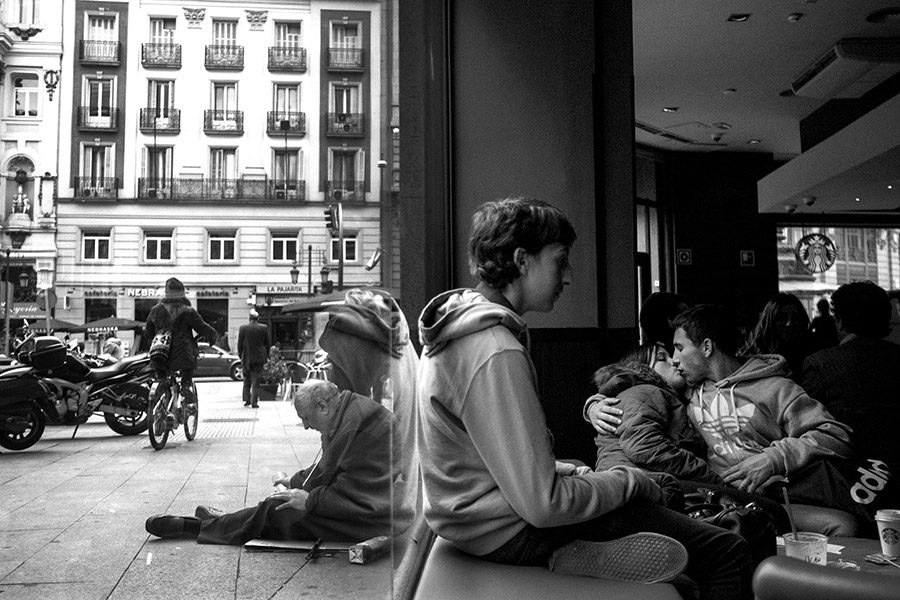
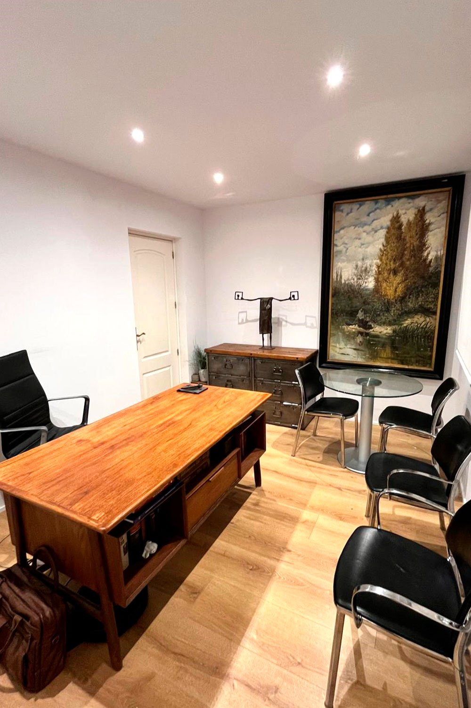
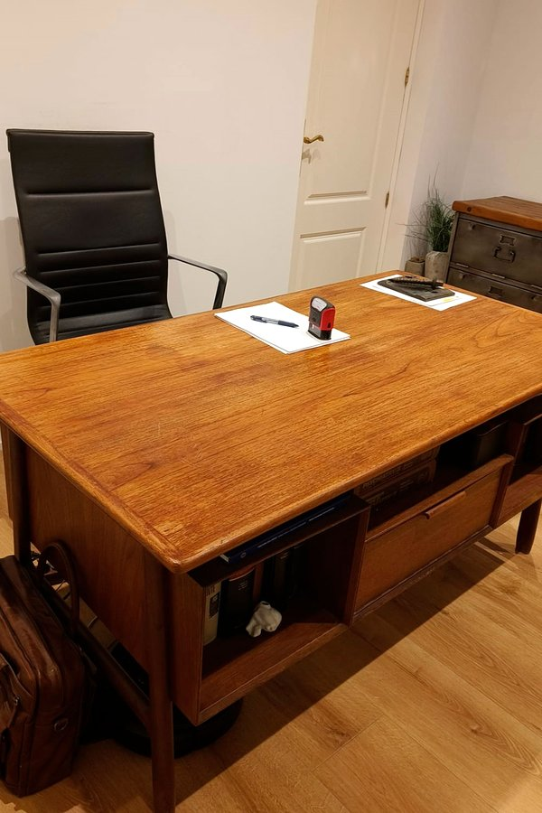
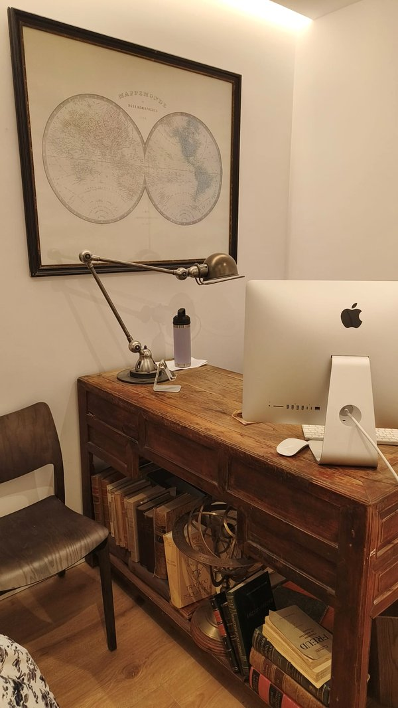
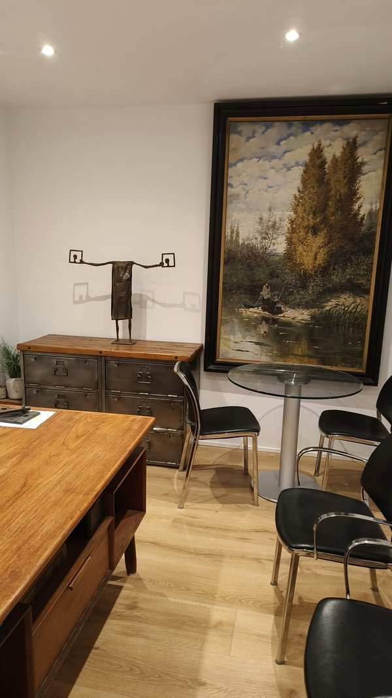
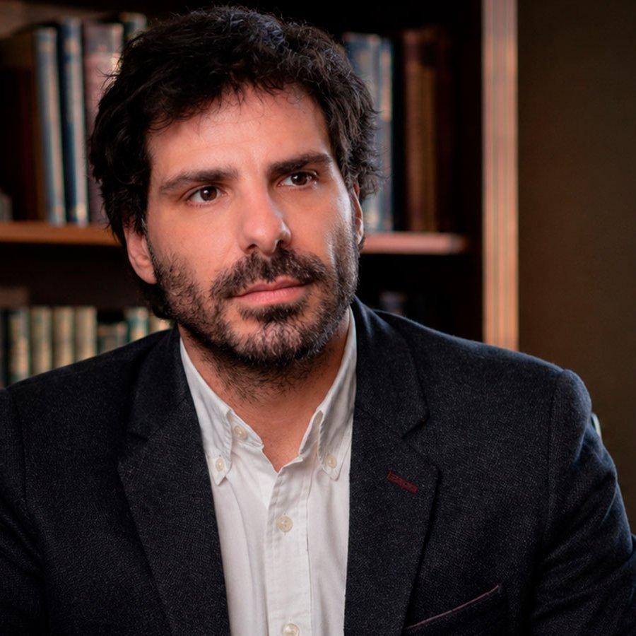

Psiquiatra · Madrid
Desarrollo mi actividad clínica en el Hospital Clínico San Carlos de Madrid desde hace más de quince años, en un entorno donde es habitual trabajar con situaciones psiquiátricas complejas y pacientes especialmente vulnerables.
Desde hace años coordino también el Equipo de Calle de Salud Mental de Madrid, un dispositivo orientado a la atención de personas con trastornos mentales graves que viven fuera de los circuitos habituales de asistencia sanitaria.
Ese trabajo ha marcado de forma importante mi manera de entender la psiquiatría. No solo desde el diagnóstico o la medicación, sino también desde el contexto en el que vive cada persona y desde las dificultades reales que muchas veces rodean al sufrimiento mental.
Además de la actividad clínica, participo en docencia universitaria e investigación en el ámbito de la psiquiatría y las neurociencias.
Mi consulta privada mantiene la misma forma de trabajo que desarrollo en el ámbito hospitalario: una psiquiatría basada en la escucha, el criterio clínico y una evaluación individualizada de cada situación.


Método
La psiquiatría rara vez funciona bien cuando se reduce únicamente a síntomas, etiquetas diagnósticas o respuestas automáticas.
Muchas veces lo importante es entender cómo ha llegado una persona a una determinada situación, qué factores están interviniendo y qué tipo de intervención puede ser realmente útil en ese momento concreto.
No todas las situaciones requieren actuar de la misma manera. Hay momentos donde es necesario intervenir con más rapidez y otros donde lo importante es escuchar, ordenar lo que está ocurriendo y entender mejor el contexto antes de sacar conclusiones.
«Parte del trabajo clínico consiste también en poder hablar de situaciones difíciles sin dramatizarlas innecesariamente y sin convertir al paciente en un diagnóstico.»
La experiencia acumulada durante años en el ámbito hospitalario, en dispositivos de atención comunitaria y en contextos especialmente complejos ha influido directamente en mi forma de trabajar.
Eso implica convivir habitualmente con:
En consulta, el objetivo no es únicamente reducir síntomas. También es construir un espacio donde la persona pueda explicar lo que le ocurre con normalidad y sin sentirse juzgada o simplificada.
La medicación, cuando se utiliza, forma parte de una estrategia clínica más amplia. No se plantea como una respuesta automática, sino como una herramienta que debe ajustarse cuidadosamente a cada situación y a cada paciente.

Consulta privada
La consulta privada permite trabajar determinadas situaciones con más tiempo, continuidad y seguimiento individualizado.
La primera parte del proceso suele centrarse en comprender con detalle qué está ocurriendo, cómo ha evolucionado la situación y qué factores pueden estar influyendo en ella.
«No siempre existe una explicación inmediata. Y no todos los problemas se resuelven de la misma forma.»
En muchos casos, parte del trabajo consiste precisamente en ordenar situaciones que llevan tiempo generando sufrimiento o desgaste:
La experiencia clínica en contextos complejos ha reforzado una forma de trabajo basada más en comprender cada caso concreto que en aplicar esquemas rígidos o soluciones rápidas.
Eso incluye también valorar cuidadosamente cuándo una intervención puede ayudar y cuándo determinadas decisiones necesitan más tiempo o más observación.
La consulta se desarrolla exclusivamente con pacientes privados y sin intermediación de aseguradoras, con el objetivo de mantener independencia clínica, continuidad y tiempo suficiente en el seguimiento.




Recorrido

Soy médico especialista en Psiquiatría y Doctor en Neurociencias por la Universidad Complutense de Madrid, con calificación Cum Laude.
Desarrollo mi actividad clínica en el Hospital Clínico San Carlos de Madrid desde 2010, trabajando de forma continuada en el ámbito de la psiquiatría hospitalaria pública.
Una parte especialmente importante de mi trayectoria ha sido la coordinación del Equipo de Calle de Salud Mental de Madrid, un dispositivo dedicado a la atención de personas sin hogar con trastornos mentales graves.
«Este trabajo implica intervenir en entornos no estructurados, muchas veces alejados de los circuitos convencionales de atención sanitaria, y abordar situaciones donde los problemas psiquiátricos aparecen estrechamente ligados a factores sociales, económicos y familiares.»
He participado también como consultor psiquiátrico en Instituciones Penitenciarias, trabajando en contextos donde los aspectos clínicos, sociales y legales suelen entremezclarse de forma compleja.
En paralelo a la actividad asistencial, mantengo una dedicación continuada a la docencia universitaria y a la formación de médicos residentes.
Soy Profesor Asociado en la Facultad de Medicina de la Universidad Complutense de Madrid, donde imparto docencia en el ámbito de la Psiquiatría y la Psiquiatría Forense.
Mi actividad profesional combina práctica clínica, trabajo comunitario, docencia e investigación, manteniendo siempre una orientación principalmente asistencial y clínica.
Docencia e investigación
La actividad académica forma parte de mi trayectoria desde hace años.
Participo como docente en la Universidad Complutense de Madrid, tanto en el Grado de Medicina como en programas relacionados con la psiquiatría forense y las neurociencias.
Además de la formación de estudiantes, colaboro en la docencia y supervisión de médicos residentes y profesionales en formación dentro del ámbito de la salud mental.
Mi investigación se ha desarrollado principalmente en áreas relacionadas con las psicosis, los trastornos complejos y distintos aspectos clínicos de la psiquiatría.
He colaborado en publicaciones científicas nacionales e internacionales y participo en proyectos vinculados al Instituto de Investigación Sanitaria del Hospital Clínico San Carlos.
«La actividad investigadora y la práctica clínica forman parte de un mismo trabajo: mantener una actualización constante y revisar críticamente la forma en que se entienden y se abordan los problemas de salud mental.»
Textos y reconocimientos
Soy autor de más de quince publicaciones científicas en revistas nacionales e internacionales, en los ámbitos de la psiquiatría clínica, la psiquiatría forense y las neurociencias. Mi investigación se ha centrado especialmente en los primeros episodios psicóticos, los trastornos de personalidad, la conducta delictiva en personas con trastorno mental grave y la valoración del riesgo.
Selección de publicaciones
Reconocimientos
Lista completa disponible en el Portal de la Investigación de la UCM y en ResearchGate.
Contacto
El contacto puede realizarse por correo electrónico o por teléfono. A partir de una primera comunicación, se valorará la posibilidad de concertar una cita presencial o telemática en función de cada situación.
Teléfono de consulta
630 76 71 66